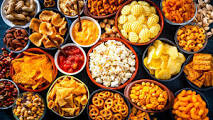
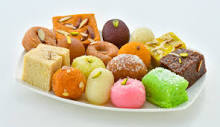
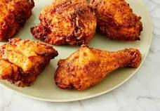
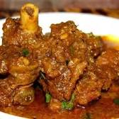
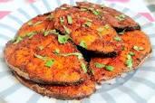
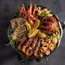
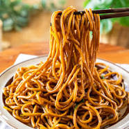

Top Ten Foods
Spicy

Spicy foods are said to boost the production of serotonin (feel-good hormones).
They thus help ease depression.
Sweet

Famous and healthy, traditional, quick, easy sweets and desserts recipes to make at home for this
Ingredients
Barfi (Burfi)
Ladoo (Laddu)
Salty
In common usage, salt is a mineral composed primarily of sodium chloride.
In the form of a natural crystalline mineral, salt is also known as rock salt or halite.
Jucie
This is the best Juicy Lucy Burger recipe! A burger stuffed with cheese and "baked" in the oven
Ingredients
8 ounces ground beef (I use Emeril's Burger Seasoning)
¼ teaspoon burger seasoning
1 slice American cheese
1 hamburger bun
Dessert
Looking for the best potluck desserts to make for your next gathering? From cookie balls to layer ...
Ingredients
Fudge
Potluck Cheesecake Dessert
Oreo Cookie Balls
Ambrosia Salad
Magic Monster Layer Bars
Chicken

Chicken gets brined in flavorful buttermilk before hitting the fryer for a crisp, golden crust.
Ingredients
2 tablespoons paprika
2 tablespoons freshly ground black pepper
2 teaspoons garlic powder
2 teaspoons dried oregano
1/2 teaspoon cayenne pepper
Mutton

Mutton is meat from a sheep over two years old, and has less tender flesh. In general, the darker the colour, the older the animal. Britain, Australia, and New
Classifications and Butchery and cookery Cuts Dishes
Fish

Spicy and Aromatic Kerala Style Fish Fry
Ingredients
1 large (app: 1Kg) pomfret (avoli)
1 tbsp red Chili powder
1 tbsp pepper powder
¼ tsp turmeric powder
Salt ((as required))Spicy and Aromatic Kerala Style Fish Fry
SeaFood

Seafood is any form of sea life regarded as food by humans, prominently including fish and shellfish.
Shellfish include various species of molluscs (e.g. ...
List of types of seafood List of seafood dishes Seafood Watch History of seafood
Noodles

Noodles are a type of food made from unleavened dough which is either rolled flat and cut, stretched,
or extruded, into long strips or strings.
Chinese noodles Japanese noodles Korean noodles Instant noodles